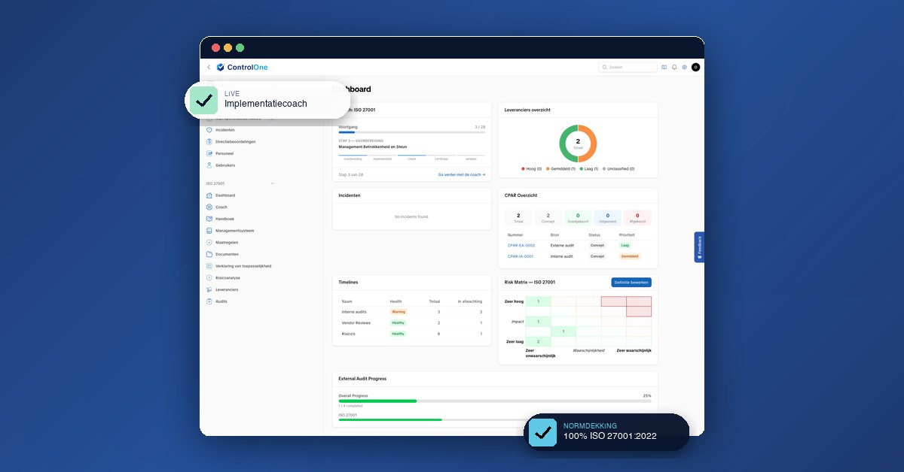
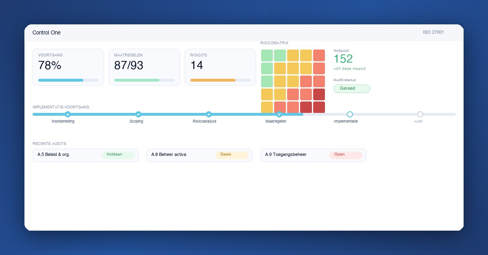
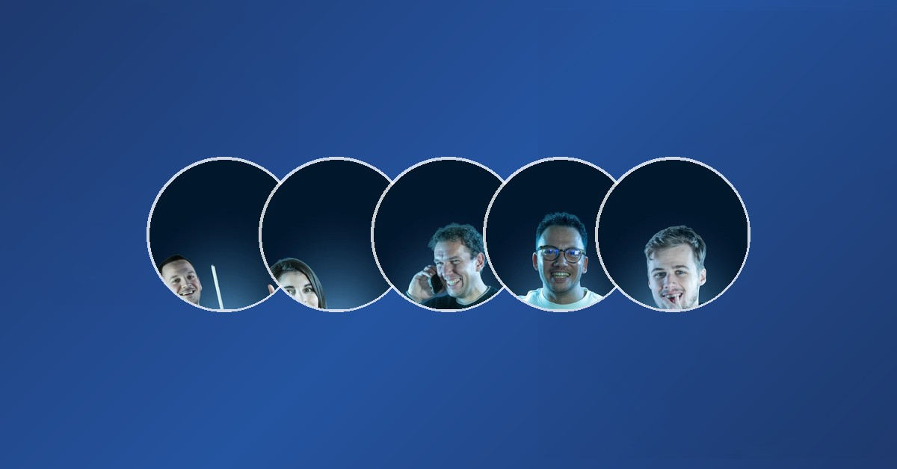
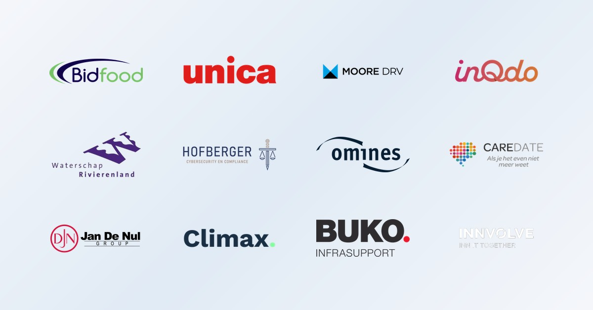

Allemaal 1200×628 landscape. Geef aan welke stijl(en) je wil — daarna scale ik die op naar alle 3 ratio's (landscape, square, portrait).
Portal-screenshot in browser-chrome op brand-blauw, met 2 floating overlay pills (LIVE · Implementatiecoach + NORMDEKKING · 100% ISO 27001:2022). Exact dezelfde compositie als de hero op /iso-27001.

Volledig zelf-getekende mockup met perfecte data (78% voortgang, 87/93 maatregelen, 14 risico's, risicomatrix in kleur, 6-stap timeline, audit-rijen). Geen lege screenshot-velden, geen "in afwachting"-status — alles ziet er actief en succesvol uit.

5 echte teamleden in cirkels op brand-blauwe gradient. Mensen in B2B ads geven historisch +30-50% CTR. Probleem: deze 5 portretten hebben heel verschillende composities (laptop, telefoon, gebaar) — face-crop is inconsistent. Zou werken met betere portretselectie of consistente fotografie.

12 echte Nederlandse klanten (Bidfood, Unica, Moore DRV, Waterschap Rivierenland, Hofberger, Omines, Caredate, Jan De Nul, Climax, Buko, Innvolve, inQdo). Sterk social-proof signaal. Probleem: Google's regel "no collage images" + lichte achtergrond kan flaggen als all-white BG.

Welke stijl wil je gebruiken (1, 2, 3, 4 of combinatie)? Daarna scale ik op naar landscape + square + portrait per gekozen stijl, plus de logo's.